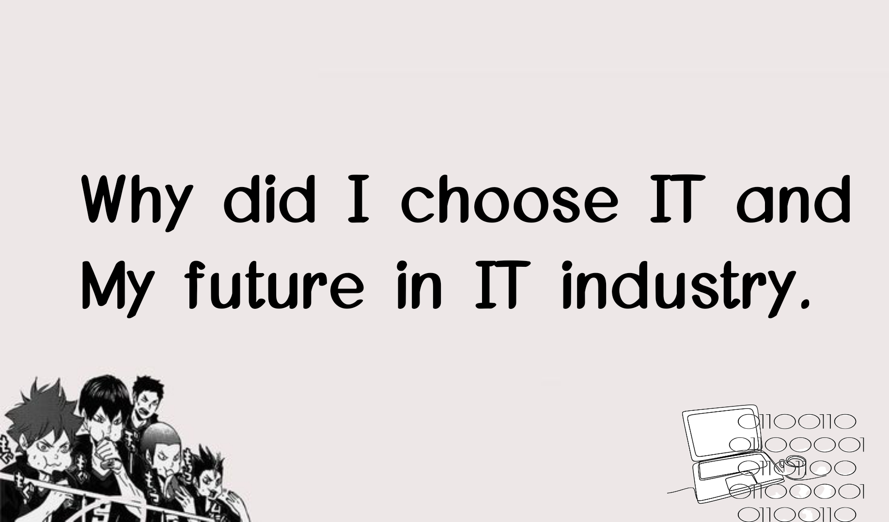

Hi, I choose IT 'cause, first let me share my journey about choosing my dream. It's kinda impossible and weird but I'm gonna share it. When I was in my fourth year of high school I feel like I wanted to create an app that saves the lives of other people, in our country, there are a lot of cases where the most woman died caused by raped, sexual assault, and kidnapping. At that time I asked, How about an app that helps people most of all women in dangerous situations? an app that can use offline, an app that can easily track locations, an app that can record audio or video, and an app that can easily contact the police department, How about? I know that the idea is impossible because I'm just fifteen years old, like how can I make that app? but in that idea, I prefer to choose IT maybe I'll learn how to, and maybe I'll create that app in another way? and that's the first thing why I choose IT. But now I know there is already an app on the cellphone or they already invented that idea. Thankful but I'm not satisfied. In my senior high school journey, I learn some pieces of stuff about a computer, they teach me about ICT, acronyms, a list of HTML tags, coding symbol names, coding, programming languages, and many more that's all I remember I forgot others hehe. During that journey, I find myself more interested in computers. I feel like I'm gonna fit in this industry because honestly I don't like cooking but we have a food business which is cassava cake, . but well my mother always says to me that " always choose what your heart wants. " and that's the last thing why I choose IT.
Honestly, I don't know what future I'll have in the IT industry, and I don't know how to convince myself I sometimes question myself " I'll make it through this? " because I have that low self-esteem other people find me shy and slow learner, that's right but this quotes inspired me and continue believing in what myself can do. " So if you have a dream then just believe that you can achieve it no matter what. Even when you can't feel deep in your heart any words of encouragement, just believe in your dream and your heart will finally show you the way." ( - Shuchi Gupta ) Even though I don't know what I'm going to do but I believe in what I can do. I always believe that I'm gonna make it in another way, I always believe that I'm going to be soon an Application Developer, or IT Security Specialist.